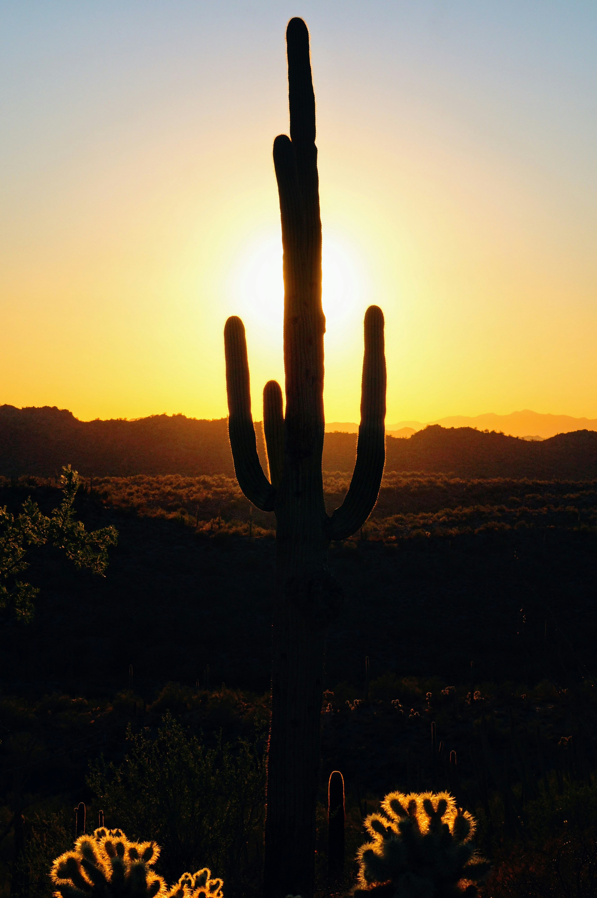
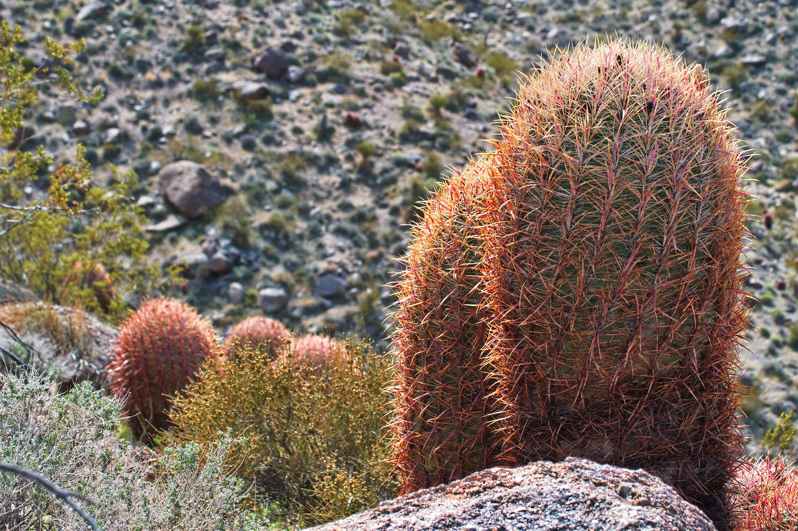
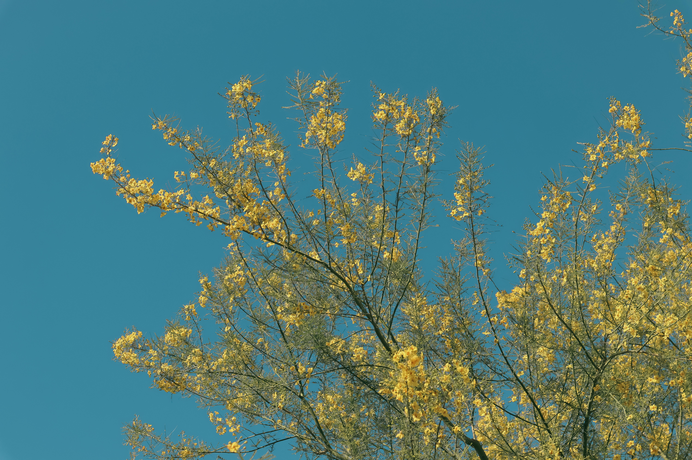
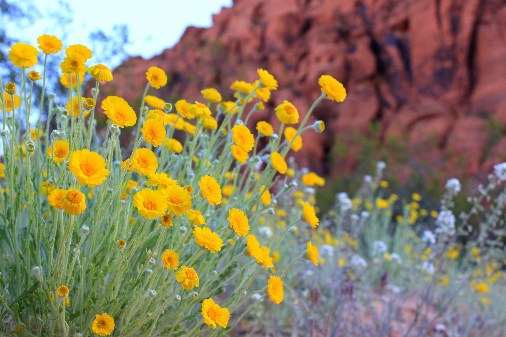

Organ Pipe Cactus
This many-limbed cactus is the monument’s namesake, and for good reason. The monument hosts the northernmost wild growing members of this species. This species relies on and provides food for some important animals here. The endangered lesser long-nosed bat (Leptonycteris curasoae) and the white-winged dove feed on the nectar through the night and following day and pollinate the plants. Fruit is consumed and seeds are dispersed by bats, birds, and bighorn sheep, as well as human inhabitants. This species can live for about 150 years.

Barrel Cactus
The Arizona barrel cactus is a large desert plant with durable, hooked spines which can be used as fishhooks. This cactus tends to lean towards the south to maximize sun exposure, sometimes leaning so far that it will uproot itself. Flowers appear in late summer and early fall, later than other cacti in the monument, providing early season visitors a taste of the colorful Sonoran blooms.

Palo Verde
Two species of palo verde are found in the monument. Foothill palo verde (P. microphyllum), is a slightly brighter green than the blue palo verde (P. florida), which is more dusty blue. Palo verde is Spanish for “green stick”, which describes the green branches and trunk. The green color of the plant allows it to turn sunlight into fuel, or "photosynthesize" even when leaves fall in time of drought.

Brittlebush
Brittlebush is especially common along roadsides, where a little extra run-off may cause some plants to produce occasional out-of-season blossoms. Brittlebush contains an aromatic resin that was burned by Spanish missionaries as incense; because of this, it is also known as “incienso”.
